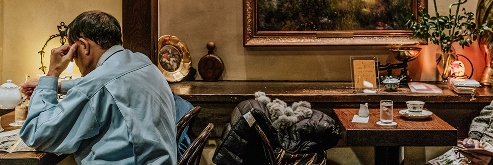
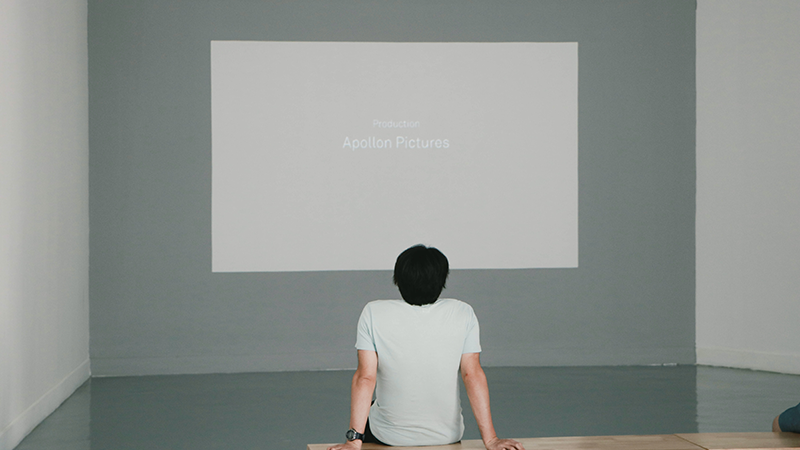
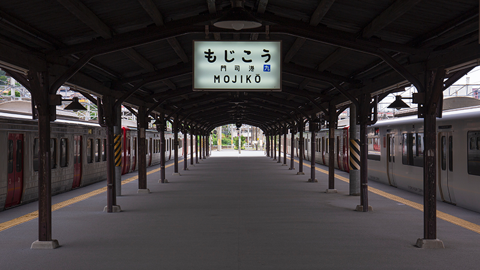
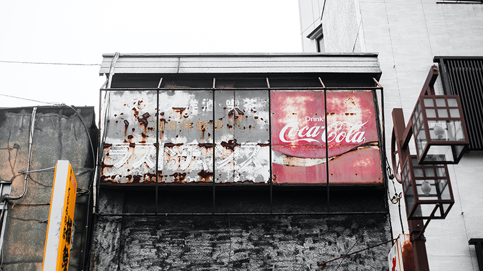
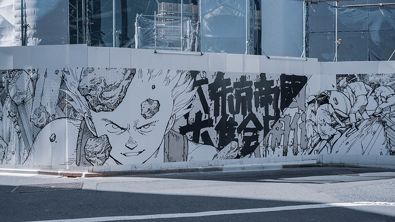

Cities
Inspirations
Topics
About KISSA
Home
Cities
Inspirations
Topics
About KISSA
Cooperate With Us
My Account
Topics
Immerse yourself in the city's lifestyle.
Category
Top
Culture
Art
Local
News
Popular
Culture
Kissaten: A Slowly Dying Part of Japanese Culture

Local
Best kissaten coffee shops in Tokyo
Art
Art project encourages evacuees of disaster-hit Fukushima town
News
Our critics’ favorite books published in 2020
Latest

Art
A festival of new Asian art, seeking a direction
by
Celeste Mills

Local
Expirence the nostalgic atmosphere of the Tokyo Shitamachi from a CHIN-CHIN train
by
Katy

Culture
Captured history: A collection of milestones in early images of Japan
by
Scarlet Harris

News
Virtual and victorious: Anime came out on top in 2020
by
KAI Chang
Load More
Go Top